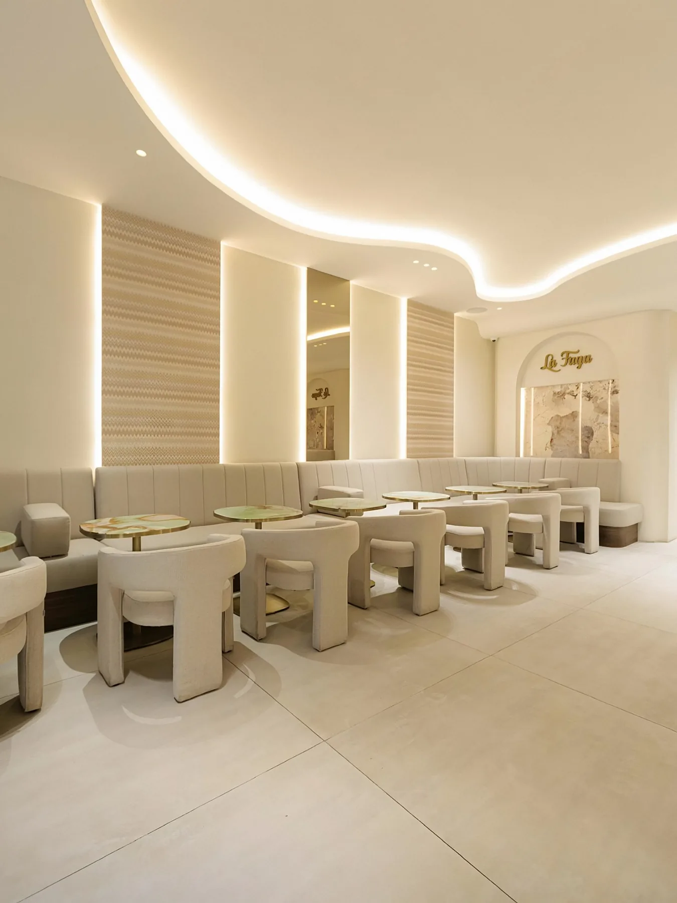
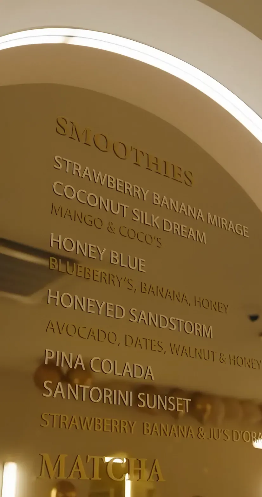

La Fuga, Cake & Brunch
West-Kruiskade 59B, Rotterdam
Taart, desserts en signature matcha, in een zaak van zacht licht en beige. Elke dag open van 13:00 tot 23:00.
Vers in de vitrine
Cheesecakes, minis, macarons en meer. Zo ziet onze vitrine eruit.


Wat er vandaag ligt, zie je in de zaak. De vitrine wisselt.
Wat wordt het vandaag?
Japandi en hotel chique
Zachte rondingen, warm licht en een vleugje beige luxe. Een golvend plafond vol licht, beige banken en tafels van groene onyx met een goudkleurige rand.
Na de verbouwing kregen ook het concept en de recepten een nieuwe versie, met matcha en Dubai-chocolade.
- 13:00–23:00Elke dag open
- Signature matchaStrawberry, mango, latte
Wat wordt het vandaag?
Kies je moment en zie drie dingen om te proberen, uit de vitrine en van de kaart.
Puur een suggestie. Wat er vandaag ligt, zie je in de vitrine.
De kaart
Van onze kaartmuur in de zaak.
- Lemon Merengue Cake
- Passion Fruit Cake
- Raspberry White Chocolate
- Cinnamon Bun Cake
- Grandma's Tiramisu
- Red Velvet Cake
- Snicker Cake
- San Sebastian Cake
- Pistachio Cake
- Passion Fruit Mini
- Pistachio Mini
En meer minis in de vitrine.
- Strawberry Matcha
- Mango Matcha
- Latte Matcha
- Strawberry Banana Mirage
- Coconut Silk DreamMango & coco's
- Honey BlueBlueberry's, banana, honey
- Honeyed SandstormAvocado, dates, walnut & honey
- Pina Colada
- Santorini SunsetStrawberry, banana & jus d'orange
- Regular
- Strawberry
- Passion Fruit
- Blue Lagoon
- Dubai Crêpe
- Lotus Mini Cheesecake
- Pistachio Cookie
Voorbeeld van onze kaart. Wat er vandaag ligt, zie je in de vitrine.

4,4 op Google
Gemiddeld 4,4 uit 5 op Google, uit 620 reviews.
Where cakes & class meet
@lafuga.rotterdam op InstagramLangskomen
- Adres
- West-Kruiskade 59B
3014 AL Rotterdam - Open
- Dagelijks, 13:00–23:00
- Reserveren
- Bel 010 203 5909
West-Kruiskade 59B, 3014 AL Rotterdam
De kaart komt van Google Maps en laadt pas als je klikt.